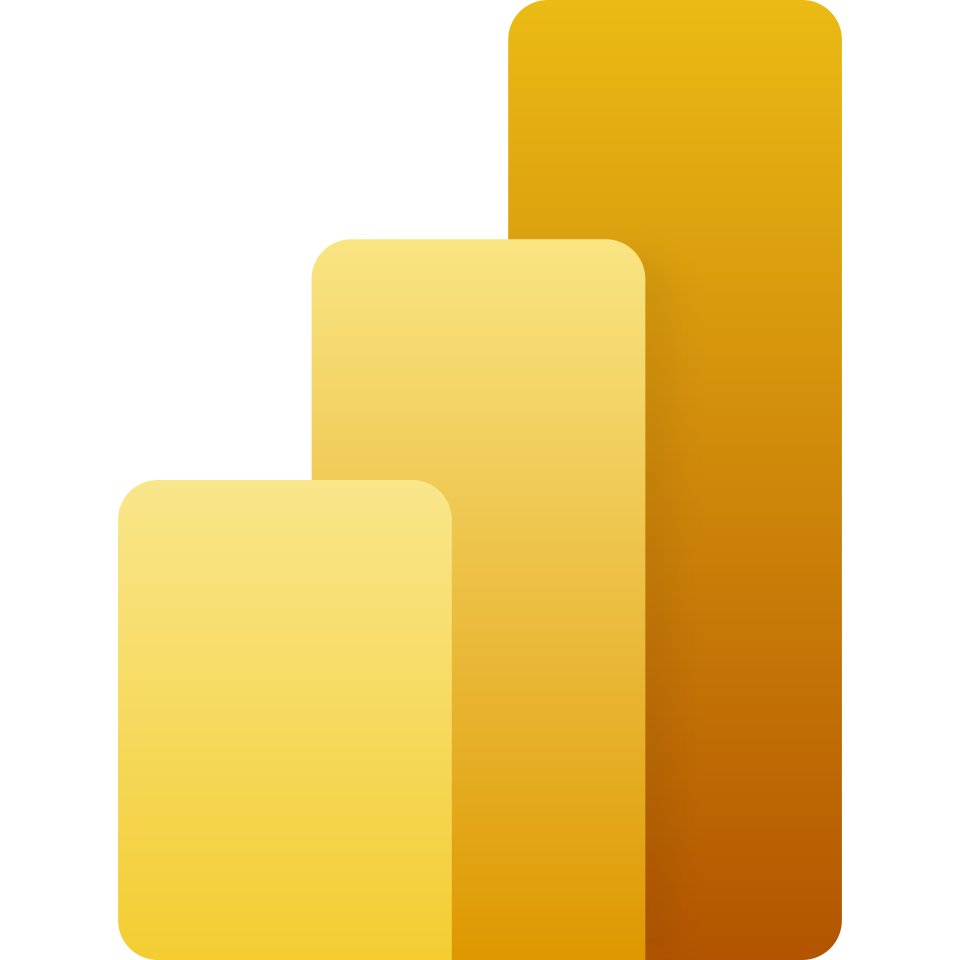

Power BI
Power BI transforme des données brutes en tableaux de bord interactifs. Le cours suit la chaîne complète : modèle décisionnel (faits, dimensions, schéma en étoile), Power Query (ETL self-service), DAX (mesures, time intelligence) puis visualisation, publication et sécurité. Il prolonge SQL, la modélisation et la qualité des données.
Comment un directeur commercial voit-il en 5 secondes quelle région recule, sans attendre un export Excel de 40 000 lignes ?
Chiffres contradictoires selon les versions, aucun filtre interactif, rien n'est actualisé automatiquement.
Les données sont importées, nettoyées et reliées une fois ; les visuels se filtrent entre eux d'un clic et se rafraîchissent à chaque actualisation.
Power BI (Microsoft, 2015) est une suite de Business Intelligence : Desktop (conception, gratuit), Service (publication et partage dans le cloud) et Mobile. Une même chaîne : se connecter aux sources, transformer (Power Query), modéliser (relations, mesures DAX), visualiser, partager.
De Excel à Fabric : dix ans de BI en libre-service
- Analystes métier : tableaux de bord de ventes, finance, RH.
- Data Engineers : alimenter le modèle (entrepôt, SQL) et industrialiser l'actualisation.
- Dirigeants : indicateurs (KPI) en lecture seule.
Premier contact : un chiffre d'affaires par mois en une mesure
CA = SUM ( Ventes[Quantité] * Ventes[PrixUnitaire] ) -- erreur : SUM n'accepte qu'une colonne
CA = SUMX ( Ventes, Ventes[Quantité] * Ventes[PrixUnitaire] ) -- ligne par ligne
CA 2023 = CALCULATE ( [CA], 'Date'[Année] = 2023 ) -- change le contexte de filtre
CA N-1 = CALCULATE ( [CA], SAMEPERIODLASTYEAR ( 'Date'[Date] ) )
Évolution % = DIVIDE ( [CA] - [CA N-1], [CA N-1] ) -- DIVIDE évite la division par zéro
-- Dans un visuel par mois : chaque mois affiche SON CA, SON CA N-1, SON évolutionUne mesure n'est pas stockée : elle est recalculée selon le contexte de filtre de chaque case du visuel (mois, région, segment). CALCULATE modifie ce contexte. DIVIDE gère le zéro.
- Restituer l'information par des indicateurs et visuels pertinents.
- Modéliser les données pour l'aide à la décision.
Présenter Power BI en une minute
« Power BI est la plateforme de BI de Microsoft. Je me connecte aux sources, je nettoie avec Power Query (ETL self-service), je construis un modèle en étoile : une table de faits (ventes) entourée de dimensions (produit, client, date) reliées par des relations un-à-plusieurs. Les calculs sont des mesures DAX, évaluées dans un contexte de filtre.
Les visuels sont interactifs : un clic filtre les autres. Je publie sur le Service, je programme l'actualisation (via une passerelle pour une source locale) et je limite l'accès par RLS (sécurité au niveau ligne).
Points de vigilance : un modèle propre vaut mieux que des formules complexes, privilégier les mesures aux colonnes calculées, éviter les relations plusieurs-à-plusieurs. »
5 idées font tout le cours
Tout le cours répond à : comment transformer des tables brutes en un rapport juste, rapide et lisible par le métier ? Cinq idées couvrent le modèle, Power Query, DAX et les visuels.
Un bon rapport repose sur un modèle en étoile : une table de faits (les ventes, une ligne par vente) entourée de dimensions (date, produit, client), reliées en un-à-plusieurs. Les filtres partent des dimensions et descendent vers les faits.
L'erreur typique : Si l'on met tout dans une seule table plate, ou si l'on relie des tables en plusieurs-à-plusieurs, les filtres deviennent ambigus et les totaux faux.
La bonne pratique : Construire une table de faits et des dimensions séparées, reliées en un-à-plusieurs, avec le filtre qui va de la dimension vers les faits.
ch. 01 · ch. 03
Le nettoyage se fait avant le modèle, dans Power Query : connexion à la source, typage des colonnes, fusions et ajouts. Chaque étape est enregistrée et rejouée automatiquement à chaque actualisation.
L'erreur typique : Si chaque rapport refait son propre nettoyage, les règles finissent par diverger, et deux rapports donnent deux chiffres différents.
La bonne pratique : Faire le nettoyage une seule fois dans Power Query (ou dans un dataflow partagé) et faire lire le même modèle à tous les rapports.
ch. 02
Une colonne calculée est calculée ligne par ligne au moment de l'actualisation, puis stockée. Une mesure est calculée au moment de l'affichage, selon les filtres du visuel. Un total, une moyenne ou un ratio s'écrivent en mesure.
L'erreur typique : Si un ratio est calculé dans une colonne calculée, sa valeur est figée ligne par ligne et ne change pas quand on filtre le rapport.
La bonne pratique : Écrire le ratio en mesure : Marge % = DIVIDE(SUM(Ventes[Marge]), SUM(Ventes[CA])) ; il se recalcule selon les filtres.
ch. 03
Une mesure change de valeur selon le contexte de filtre : le segment choisi, la ligne du tableau, la page. CALCULATE modifie ce contexte. Les calculs dans le temps (année précédente, cumul depuis janvier) exigent une table de dates complète, marquée comme telle.
L'erreur typique : Si le modèle n'a pas de table de dates, les comparaisons dans le temps (année précédente, cumul depuis janvier) ne fonctionnent pas.
La bonne pratique : Créer une table de dates continue (CALENDAR ou Power Query), la marquer comme table de dates et la relier aux faits.
ch. 03 · ch. 04
Courbe pour une évolution, barres pour comparer, carte pour un lieu ; peu de visuels par page. Dans le Service : publication, actualisation planifiée, sécurité au niveau des lignes.
L'erreur typique : Si une page contient vingt visuels, le lecteur ne sait plus où regarder, et le message principal se perd.
La bonne pratique : Garder trois à six visuels par page, chacun répondant à une question, avec le chiffre principal en haut à gauche.
ch. 04
La chaîne : de la source au rapport
| Besoin | Bon choix | À éviter |
|---|---|---|
| Chiffre d'affaires total | mesure SUM | un total stocké en colonne calculée |
| Comparer avec l'année précédente | table de dates + SAMEPERIODLASTYEAR | dates prises dans la table de faits |
| Dates en texte, colonnes mal typées | typer dans Power Query | corriger dans chaque visuel |
| Deux tables de faits | dimensions partagées (constellation) | relation directe entre faits |
| Un commercial ne voit que sa région | sécurité au niveau des lignes (RLS) | un rapport par commercial |
| Montrer une tendance | courbe sur l'axe des dates | camembert |
Chaque chapitre applique les mêmes idées
| Chapitre | 1 | 2 | 3 | 4 | 5 |
|---|---|---|---|---|---|
| 01 Modèle | ● | ||||
| 02 Power Query | ● | ||||
| 03 DAX | ● | ● | ● | ||
| 04 Visuels et Service | ● | ● |
Ce qui revient dans plusieurs chapitres est une idée à comprendre ; ce qui n'apparaît qu'une fois est un exemple d'une de ces idées.
| Erreur classique | Idée oubliée | Ce qui casse |
|---|---|---|
| Une seule table plate | 1 · Un bon rapport commence par un modèle en étoile | modèle lourd, calculs faux |
| Nettoyage refait dans chaque rapport | 2 · Nettoyer en amont, dans Power Query | chiffres différents d'un rapport à l'autre |
| Ratio en colonne calculée | 3 · Mesure ou colonne calculée | valeur figée, insensible aux filtres |
| Pas de table de dates | 4 · Tout est contexte de filtre | intelligence temporelle impossible |
| Relations plusieurs-à-plusieurs entre tables | 1 · Un bon rapport commence par un modèle en étoile | filtres ambigus, totaux faux |
| Vingt visuels par page | 5 · Un visuel répond à une question | message illisible |
Du système transactionnel à l'analyse
- OLTP : saisie (ventes, stocks) ; base normalisée, beaucoup de petites écritures.
- OLAP (On-Line Analytical Processing) : analyse ; données agrégées, lectures massives, historique.
- Le passage de l'un à l'autre est un ETL (Extract, Transform, Load) : ici assuré par Power Query.
- Table de faits : un événement par ligne (une vente) ; colonnes numériques mesurables (quantité, montant) et clés vers les dimensions.
- Table de dimensions : le contexte pour filtrer et grouper (produit, client, date, région) ; colonnes descriptives.
- Mesure : calcul agrégé sur le fait (somme, moyenne) ; attribut : décrit, ne s'additionne pas.
Un montant s'additionne (mesure) ; un code postal ne s'additionne pas (attribut).
Étoile, flocon, constellation
| Schéma | Structure | Atout | Limite |
|---|---|---|---|
| Étoile | un fait relié directement à chaque dimension | simple, rapide, lisible | redondance dans les dimensions |
| Flocon | dimensions normalisées (produit → catégorie) | moins de redondance | plus de jointures, plus lent |
| Constellation | plusieurs faits partageant des dimensions | analyses croisées (ventes + stocks) | modèle plus complexe |
On privilégie l'étoile : relations un-à-plusieurs (1 → *), filtre qui va de la dimension vers le fait ; la table Date est indispensable pour la time intelligence.
Pièges de modélisation
- OLTP saisit, OLAP analyse ; l'ETL fait le lien.
- Fait = événement + mesures + clés ; dimension = contexte descriptif.
- Étoile par défaut, flocon si normalisation, constellation pour plusieurs faits.
- Relations 1 → *, table Date dédiée, granularité unique.
Fiche — Modèle
OLTP : saisie normalisée ; OLAP : analyse agrégée.
Un événement par ligne : mesures + clés étrangères.
Contexte descriptif : produit, client, date, région.
Fait relié à chaque dimension ; simple et rapide ; défaut de Power BI.
Dimensions normalisées / plusieurs faits partagés.
Indispensable à la time intelligence.
Questions d'oral — chapitre 01
Le fait est un événement mesurable (une vente) avec ses valeurs numériques et ses clés vers les dimensions ; la dimension décrit le contexte (produit, client, date) pour filtrer et regrouper les faits.
Il est simple à lire, les relations un-à-plusieurs donnent des filtres prévisibles et le moteur en mémoire y est très performant. Le flocon ajoute des jointures et ralentit sans bénéfice pour l'analyse.
Un processus d'extraction, de transformation et de chargement qui prend les données des systèmes sources, les nettoie et les structure pour l'analyse. Dans Power BI, c'est Power Query.
Parce que les fonctions de time intelligence (cumul annuel, même période l'an dernier) exigent une table de dates continue, marquée comme telle, reliée au fait.
Quand plusieurs processus métiers (ventes, stocks, livraisons) partagent des dimensions communes : on garde plusieurs tables de faits et on analyse en les croisant par les dimensions.
Vérifie tes acquis
Se connecter, nettoyer, typer
Power Query enregistre chaque étape appliquée (supprimer une colonne, changer un type, filtrer) dans un script M rejoué à chaque actualisation. On transforme avant de charger dans le modèle, avec une interface graphique.
- Fichiers plats : CSV, Excel, JSON.
- Bases relationnelles : SQL Server, PostgreSQL, MySQL (SQL).
- En ligne : API, SharePoint, services cloud.
- Dossier : combiner automatiquement plusieurs fichiers de même structure (ex. Ventes 2017 → 2023).
- Types corrects (texte, entier, décimal, date) : première chose à vérifier.
- Filtrer les lignes aberrantes, supprimer les doublons (sur la clé).
- Supprimer / renommer les colonnes inutiles dès l'import : modèle plus léger.
- Fractionner une colonne, extraire année et mois d'une date.
- Remplacer valeurs, gérer les null et les erreurs.
Les données doivent être propres avant d'être modélisées : voir Qualité & gouvernance.
Combiner et enrichir
| Opération | Effet | Équivalent SQL |
|---|---|---|
| Ajouter (Append) | empile les lignes de tables de même structure | UNION ALL |
| Fusionner (Merge) | ajoute des colonnes par jointure sur une clé | JOIN |
| Dépivoter (Unpivot) | colonnes → lignes (le plus fréquent) | UNPIVOT |
| Pivoter | valeurs → colonnes | PIVOT |
| Grouper par | agrégation | GROUP BY |
Interne, externe gauche, externe droite, complète, anti-jointure : même logique qu'en SQL.
let
Source = Csv.Document(File.Contents("orders.csv"), [Delimiter=","]),
Entetes = Table.PromoteHeaders(Source),
Types = Table.TransformColumnTypes(Entetes, {{"quantite", Int64.Type}, {"prix", type number}}),
Sans = Table.Distinct(Types, {"id_commande"}),
CA = Table.AddColumn(Sans, "CA", each [quantite] * [prix], type number)
in CADans Power Query : CA = quantité × prix ; colonne conditionnelle (si… alors… sinon) sans coder. Ces calculs se font à l'import, ligne par ligne, et sont stockés.
Pièges et résumé
- Power Query = ETL self-service ; étapes enregistrées en M, rejouées à chaque actualisation.
- Ajouter = empiler des lignes ; Fusionner = joindre des colonnes.
- Typer, filtrer, dédoublonner, supprimer les colonnes inutiles dès l'import.
- Préférer la transformation en amont (SQL) pour les gros volumes.
Fiche — Power Query
ETL self-service ; étapes en langage M rejouées à chaque actualisation.
Fichiers, bases relationnelles, services en ligne, dossier.
Empiler des lignes / joindre des colonnes (UNION / JOIN).
Colonnes → lignes ; utile pour des tableaux « larges ».
Typer, filtrer, dédoublonner, alléger dès l'import.
Gros volumes : transformer à la source (SQL, entrepôt).
Questions d'oral — chapitre 02
Le moteur d'ETL de Power BI et d'Excel : il se connecte à des sources, applique des transformations enregistrées étape par étape dans un script M, et charge le résultat dans le modèle. Les étapes sont rejouées à chaque actualisation.
Ajouter empile les lignes de tables de même structure, comme un UNION ; Fusionner joint des tables sur une clé pour ajouter des colonnes, comme un JOIN.
Chaque colonne occupe de la mémoire et ralentit le modèle. Un modèle léger se charge, s'actualise et se filtre plus vite.
En se connectant au dossier : Power Query les combine automatiquement en une table, et les nouveaux fichiers sont pris en compte à l'actualisation suivante.
Pour de gros volumes ou des transformations lourdes, une requête SQL ou une vue pousse le calcul vers la base (query folding), ce qui est plus rapide et plus maintenable.
Vérifie tes acquis
Colonne calculée contre mesure
Data Analysis eXpressions : le langage de formules du modèle. Il calcule des mesures dynamiques, des colonnes calculées et des tables. Syntaxe proche d'Excel, logique d'agrégation sur tables.
| Colonne calculée | Mesure | |
|---|---|---|
| Évaluée | à l'actualisation, ligne par ligne | à l'affichage, selon le filtre |
| Stockée | oui (mémoire) | non |
| Contexte | de ligne | de filtre |
| Usage | attribut, tri, relation | total, ratio, KPI |
Règle : par défaut, préférer la mesure ; la colonne calculée alourdit le modèle.
CA = SUMX ( Ventes, Ventes[Quantité] * Ventes[PrixUnitaire] )
Nb clients = DISTINCTCOUNT ( Ventes[IdClient] )
Panier moyen = DIVIDE ( [CA], [Nb commandes] )
CA France = CALCULATE ( [CA], Clients[Pays] = "France" ) -- modifie le filtre
CA % total = DIVIDE ( [CA], CALCULATE ( [CA], ALL ( Produits ) ) ) -- ALL retire le filtreContexte de filtre et intelligence temporelle
- Contexte de filtre : ce que les segments, lignes et colonnes du visuel imposent (mois = mars, région = Nord). Une mesure est recalculée dans chaque case.
- Contexte de ligne : la ligne courante d'une colonne calculée ou d'un itérateur (
SUMX). CALCULATEchange le contexte de filtre : c'est la fonction centrale.
- Exige une table de dates continue, marquée comme table de dates et reliée au fait.
TOTALYTD(cumul annuel),SAMEPERIODLASTYEAR,DATEADD,PREVIOUSMONTH.- Créer la table :
CALENDAR/CALENDARAUTO.
Date = ADDCOLUMNS (
CALENDAR ( DATE ( 2017, 1, 1 ), DATE ( 2023, 12, 31 ) ),
"Année", YEAR ( [Date] ),
"Mois", FORMAT ( [Date], "MMMM" ),
"N° mois", MONTH ( [Date] ) ) -- trier Mois par N° mois
CA YTD = TOTALYTD ( [CA], 'Date'[Date] )
CA N-1 = CALCULATE ( [CA], SAMEPERIODLASTYEAR ( 'Date'[Date] ) )
Écart % = DIVIDE ( [CA] - [CA N-1], [CA N-1] )Sans marquer la table de dates, les fonctions temporelles renvoient des résultats faux ou vides.
Pièges DAX
SUM sur un produit de colonnes : SUMX est nécessaire./ : erreur si le dénominateur est 0 ; DIVIDE.- DAX calcule des mesures dynamiques dans un contexte de filtre.
- Mesure (affichage, non stockée) contre colonne calculée (actualisation, stockée).
CALCULATEmodifie le filtre ;SUMXitère ligne par ligne.- Time intelligence : table de dates marquée,
TOTALYTD,SAMEPERIODLASTYEAR.
Fiche — DAX
Calculée à l'affichage, dans le contexte de filtre ; non stockée.
Calculée à l'actualisation, stockée, contexte de ligne.
Modifie le contexte de filtre : fonction centrale de DAX.
Itérateur : évalue ligne par ligne puis agrège.
Table Date marquée ; TOTALYTD, SAMEPERIODLASTYEAR.
Division sûre qui gère le zéro.
Questions d'oral — chapitre 03
La colonne calculée est évaluée à l'actualisation ligne par ligne et stockée dans le modèle ; la mesure est évaluée à l'affichage selon le contexte de filtre et n'occupe pas de mémoire. On privilégie les mesures.
L'ensemble des filtres appliqués à une case de visuel par les axes, légendes, segments et filtres : une mesure est recalculée pour chaque case selon ce contexte, d'où des valeurs différentes par mois ou par région.
À évaluer une expression en modifiant, ajoutant ou supprimant des filtres, par exemple restreindre à un pays ou comparer à l'année précédente. C'est la fonction la plus importante de DAX.
Les fonctions de time intelligence ont besoin d'une table de dates continue, sans trou, marquée comme telle et reliée au fait. Elle permet aussi de trier correctement les mois.
Avec une mesure CALCULATE([CA], SAMEPERIODLASTYEAR('Date'[Date])) pour le CA de l'an passé, puis DIVIDE(CA - CA N-1, CA N-1) pour le pourcentage d'évolution.
Vérifie tes acquis
Choisir le bon visuel et construire un rapport
On ne choisit pas un graphique pour son aspect mais pour ce qu'il montre : le bon type rend la lecture immédiate.
| Question | Visuel adapté |
|---|---|
| Évolution dans le temps | courbe, histogramme groupé |
| Comparer des catégories | histogramme / barres (triées) |
| Part du tout (peu de catégories) | secteur ou anneau |
| Chiffre clé | carte (KPI), jauge |
| Détail | tableau, matrice |
| Géographie | carte géographique |
- Segments (slicers) : filtres visibles ; filtres de visuel, de page, de rapport.
- Interactions croisées : un clic filtre les autres visuels.
- Signets, info-bulles, drill-through : navigation et détail.
- Hiérarchie (année → trimestre → mois) : drill down.
Lisibilité : un message par page, peu de couleurs, titres explicites, tri logique, pas de camembert à douze parts.
Service, actualisation et sécurité
- Import : données copiées en mémoire (moteur VertiPaq, colonnes compressées) ; rapide, à actualiser.
- DirectQuery : requêtes envoyées à la source à chaque interaction ; données fraîches, plus lent.
- Connexion active (live) : modèle hébergé ailleurs (Analysis Services).
- Desktop (.pbix) → publier vers le Service (espace de travail).
- Actualisation planifiée ; une passerelle (gateway) est nécessaire pour une source locale.
- Applications et partage ; licences Pro / Premium / Fabric.
Des rôles définissent des filtres DAX sur des tables : [Région] = USERPRINCIPALNAME() ou une table de correspondance. Chaque utilisateur ne voit que ses lignes, même sur un rapport partagé. Le test se fait par Afficher en tant que.
-- rôle « Commercial » sur la table Clients
[Responsable] = USERPRINCIPALNAME ()
-- chaque commercial ne voit que ses clients, dans tous les visuelsLa RLS filtre les lignes ; pour masquer des colonnes, on utilise la sécurité au niveau objet (OLS). Voir aussi sécurité et gouvernance.
Pièges et résumé
- Un visuel = une question ; peu de couleurs, titres explicites.
- Import (rapide, à actualiser) contre DirectQuery (frais, plus lent).
- Publier sur le Service, planifier l'actualisation, passerelle pour le local.
- RLS : filtre DAX par rôle, test « Afficher en tant que ».
Fiche — Visuels et Service
Courbe : temps · barres : comparaison · secteur : parts · carte : KPI.
Segments, filtres, interactions croisées, drill-through.
Copie en mémoire (rapide) / requêtes à la source (frais).
Publier, actualiser (passerelle pour le local), partager.
Rôles avec filtres DAX : chacun ne voit que ses lignes.
Un message par page, peu de couleurs.
Questions d'oral — chapitre 04
En partant de la question : évolution dans le temps en courbe, comparaison de catégories en barres, part du tout en secteur pour peu de catégories, chiffre clé en carte, détail en tableau. L'objectif est une lecture immédiate.
Import copie les données dans le modèle en mémoire, ce qui est très rapide mais exige une actualisation ; DirectQuery interroge la source à chaque interaction, donnant des données fraîches au prix de performances moindres et de limites sur les calculs.
À permettre au Service cloud d'accéder à des sources locales (base interne, fichiers sur réseau) pour l'actualisation planifiée, sans exposer ces sources sur Internet.
La sécurité au niveau ligne : des rôles avec des filtres DAX qui limitent les lignes visibles par chaque utilisateur. Un seul rapport est partagé mais chacun ne voit que son périmètre.
Données nettoyées et typées en amont, modèle en étoile, mesures documentées et testées contre une requête SQL de référence, actualisation surveillée, RLS et accès contrôlés.
Vérifie tes acquis
45 questions pour affronter le jury
Tous chapitres mélangés ; l'ordre des questions et des réponses change à chaque tentative. Certaines questions ont plusieurs bonnes réponses.